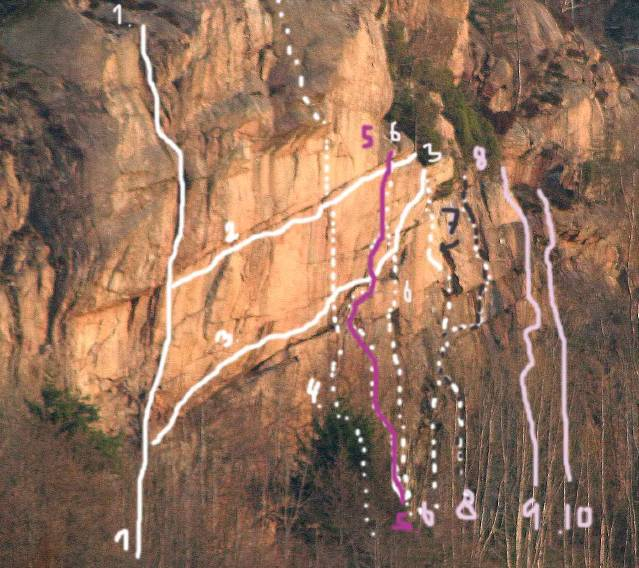

Pärleporten
Lat: 58.452044
Long: 11.46492
Allmänt
Pärleporten är en vacker västvänd vägg i botten av Åbyfjorden som säkerligen alla förbipasserande uppmärksammat men som de flesta inte klättrat på. Klippan utvecklades så sent som 2005 och har fram till idag 10st leder. Klippan är inte särskilt nybörjarvänlig även om föraren visar 5+. För att trivas här bör du vara god för grad 7 och för att älska stället bör du klättra grad 8 eller 9, först då kommer Pärleporten fram i all sin praktfullhet.
Vägbeskrivning
<div style="width: 355; float: right; margin-left: 10px; padding: 3px; border: solid 1px #cccccc;">
<googlemap version="0.9" lat="58.467669" lon="11.484146" width="350">
58.452044, 11.46492
</googlemap>
</div>
<div style="float: right; margin-left: 10px;">
</div>
Från E6, kör mot Lysekil och sväng höger mot Kungshamn. Efter fyra kilometer dyker Åbyfjorden upp på vänster sida. Precis innan busshållplatsen i mötande fil finns det en liten traktorväg som man kör på över åkern, klippan dyker upp på din vänstra sida efter ca 500m. Kör förbi klippan och parkera på platserna längre fram. Platserna på vänster sida av vägen hör till huset!
Leder
Huvudväggen

- 1
- Styx
- 7
- Den tydliga sprickan till vänster i väggen. En led för dem med vuxen smak!
- 2
- Skärselden
- 8
- Hjälp, underarmarna brinner upp! Välsäkrad och goda grepp... men då kan det väl inte vara så svårt? Prova!!! Första 10 m som Styx så diagonalt till höger tvärs över hela väggen.
- 3
- Krypa till korset
- 5+
- En spännande resa som innehåller både ålning och hangling.
- 4
- Dags att deklarera
- 8+
- Nödvändig delexamen för dr-grad i bohusklättring. Lika krävande mentalt som fysiskt.
- 5
- Tro som Illusion
- 7+
- Tung och analytisk spricklinje. Få men goda säkringsmöjligheter med vanligt bohusrack.
- 6
- Stigma
- 8
- Vänstervänt dieder leder till tak och tunn spricka.
- 7
- Gåva till nyskild kvinna
- 7-
- Fin och finurlig led. Man får mycket för pengarna. Lite skrotigt dieder för vidare via vägg till blockigt tak (12 m). Gåtfullt genom detta och så till toppen via rampspricka till vänster.
- 8
- Gave till slaktern's sønn
- 8-
- Ett fint minimalistisk dieder 6m. Kliv till vänster och upp liten vägg som led 7 till tvärsprickan. Följ denna 2m till höger och svinga genom det stora taket.
- 9
- Pärlor till mor
- 7
- Start 4m till höger om led 8. Buldrig start via tvärspricka till tunn spricka som leder vidare i en serie små diedrar skilda med små tak. En härlig tipspromenad.
- 10
- Pärla från far
- 7/7+
- Rätt lätt upp till taket, sedan trynar du (i goda säkringar) om du har gjort analysen felaktigt – och det har du nog!
Film
2a repetitionen av Dags att deklarera
Kategori:trad
Kategori:vertikalt
Kategori:överhäng
Kategori:Bohuslän
Copyright (C) Permission is granted to copy, distribute and/or modify this document under the terms of the GNU Free Documentation License, Version 1.3